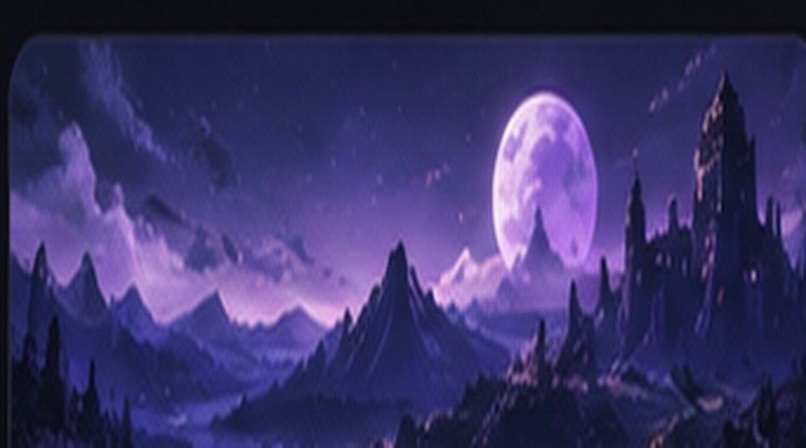
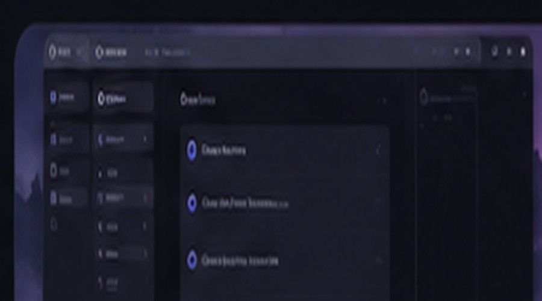
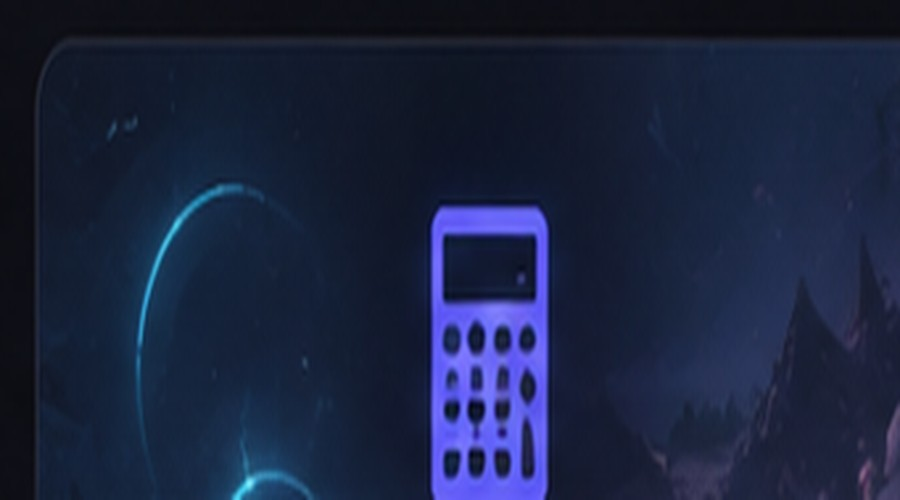

Games
Gosto de jogos que oferecem liberdade para explorar, boas histórias e mundos ricos em detalhes. Jogos de mundo aberto estão entre os que mais chamam minha atenção.
PORTFÓLIO PESSOAL
Gosto de tecnologia, programação e games. Estou sempre buscando aprender coisas novas, explorar ideias e evoluir um pouco a cada dia.
UM POUCO DA MINHA HISTÓRIA
Sou o André e tenho interesse por tecnologia, computadores e pelo universo dos jogos. Gosto de entender como as coisas funcionam, descobrir ferramentas novas e explorar assuntos que despertam minha curiosidade.
Também estou cursando programação, desenvolvendo minha base e praticando a resolução de problemas por meio de pequenos exercícios.
Este portfólio é um espaço para reunir um pouco dos meus interesses e registrar minha evolução.
O QUE DESPERTA MINHA CURIOSIDADE
Algumas áreas que fazem parte do meu tempo livre e dos assuntos que gosto de explorar.
Gosto de jogos que oferecem liberdade para explorar, boas histórias e mundos ricos em detalhes. Jogos de mundo aberto estão entre os que mais chamam minha atenção.
Tenho interesse por computadores, componentes e hardware. Acho interessante conhecer as peças, entender seu funcionamento e acompanhar as novidades da área.
Estou desenvolvendo meus conhecimentos em lógica de programação e linguagem C. Gosto de transformar problemas em passos e aprender praticando.
IDEIAS E EXPERIMENTOS
Estudos de ideias que poderiam virar pequenos projetos web. As imagens são ilustrativas e os projetos abaixo são fictícios, criados para compor este portfólio acadêmico.

Uma página para organizar jogos favoritos, descobrir novos títulos e registrar experiências de gameplay.

Um organizador simples de tarefas e estudos, pensado para acompanhar atividades e metas do dia a dia.

Uma calculadora com interface limpa e responsiva para praticar lógica, interações e manipulação de elementos na página.
Observação: estes são conceitos fictícios, não aplicações publicadas ou trabalhos já concluídos.